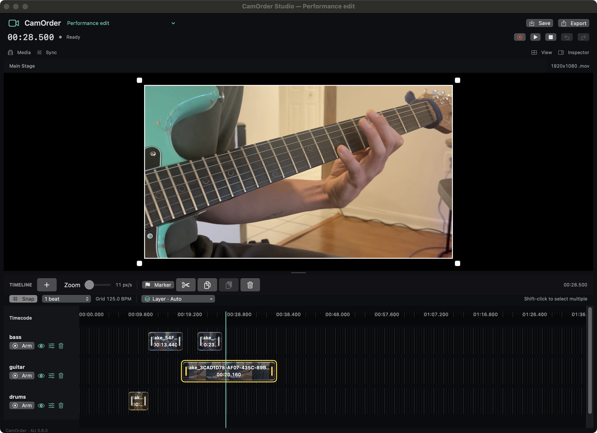
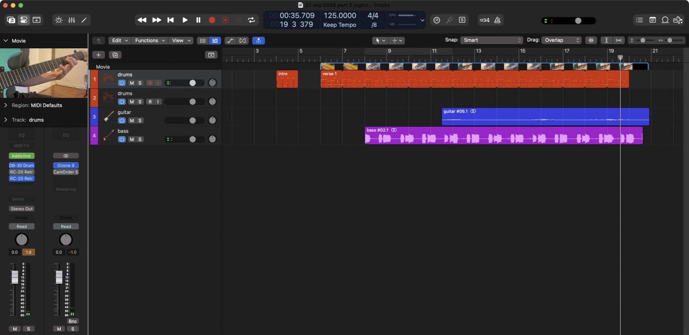

A video editor.Inside Logic Pro.
Record your cameras or screen, cut to the beat, and turn your session into a finished movie. Keep creating where your music happens.
Percussion, bass and guitar, cut into one movie with CamOrder. Press play to watch and listen.
Record it. Shape it. Share it.
The performance above started as separate takes. Here’s its real CamOrder edit: bass, guitar and drums in their own lanes, with the chosen shot on the Main Stage.
- 01 / CAPTURE
Play your music. Capture the moment.
Arm a video lane and press Play or Record in Logic. Use one camera across your lanes, assign different cameras for more angles, or record your screen.
- 02 / EDIT
Give every beat its own cut.
Trim and move regions on a grid that follows Logic’s detected tempo. Select several takes to cut together, choose the foreground, and frame your shots on the Main Stage.
- 03 / EXPORT
Take the finished movie with you.
Export MOV or MP4, and add a bounced mix for sound. A placement note tells you where to position the movie when you import it into Logic’s movie lane.


See the finished movie back in Logic Pro


Set the markers. See the movement.
This session has lead, chords and bass lanes, with zoom and pan markers shaping the shots. Watch the Main Stage move through the saved automation, then see the same movement in the exported movie.
Inside the editor

In the finished movie
The full export, with its original music. The editor excerpt corresponds to about 0:35–0:53 in this movie.
Both finished movies are real recordings made with CamOrder. These web copies preserve the original edits and sound.
Add CamOrder to your Logic session.
CamOrder runs as an Audio Unit effect. Use one instance on Stereo Out for your whole video project.
- Download the DMG and open it. Double-click Install CamOrder Studio.pkg and follow the installer; it chooses the plug-in folder for you. Fully quit and reopen Logic after installing.
- On Stereo Out, choose Audio FX → Audio Units → Santismo → CamOrder Studio → Stereo.
- Create a CamOrder project, choose a Default input, allow camera or screen access, and arm a video lane. Press Play or Record in Logic. Arm a Logic audio track too when recording audio.
- Stop to finish the take and disarm the video lanes. Edit, export, then import the movie into Logic and position it at the start shown in the accompanying placement note.
No MIDI or timecode-audio routing is needed for normal Stereo Out operation. Audio passes through unchanged; recorded takes are video-only. Import a bounced master if you want audio in the exported movie.
Direct installer download · ZIP alternative & release notes
Intel Mac · macOS 13+. Development build; the installer is unsigned and not notarized. macOS may require approval in System Settings → Privacy & Security after you first open it. Follow Apple’s instructions only if you trust the download. Apple silicon source builds have not been validated. See the user guide for compatibility and permissions.
Measure the delay. Dial it in.
Different cameras can arrive at different times. Film Logic’s clock for a quick test, then let CamOrder’s Sync Calculator work out the correction in milliseconds.
- Show milliseconds in Logic. Set Logic’s time display to hours, minutes, seconds and milliseconds, for example
00:00:36.240. Use that display for both readings, rather than bars, frames or samples. - Film the clock with the camera you want to calibrate. Point it at Logic’s time display. Select that camera in CamOrder, arm its lane, and record a short test while Logic runs. For a first calibration, start with the project and lane offsets at 0 ms.
- Export, import and compare. Export the test and load it into Logic’s movie lane. Position it at the exact start in CamOrder’s placement note. Pause on a clear frame and read the actual Logic clock and the clock visible inside the recorded picture.
- Let the calculator do the math. Open CamOrder → Sync → Calculator, choose Milliseconds, and enter both readings. Choose the camera’s lane for an individual correction, or Whole project for a shared adjustment. Click Calculate, review the result, then Apply offset.
- Re-export and check at the same position. The correction works on footage already recorded and appears in Main Stage playback and new exports. Replace the test movie in Logic, keep the same movie start, and compare again. Existing exported files do not change automatically.
For example: the camera is 80 ms late
Logic reads 00:00:36.240, while the clock filmed inside the video reads 00:00:36.160. The correction is −80 ms, moving the video earlier. A positive correction moves it later.
The calculator adds the correction to the current offset. If you already have −20 ms applied, another −80 ms correction proposes −100 ms. Review that value before applying.
Lane and project offsets add together. Calibrate each camera’s lane separately when their delays differ. Check a few points in the test and recheck after changing cameras or capture settings: one offset corrects a consistent delay, not drift. Original recordings remain unchanged.
Read the full sync guide →